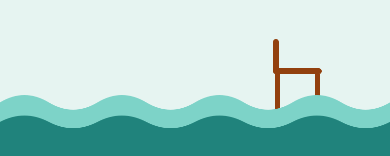

Gentle Exercises for Sore Joints: Water and Chair Workouts

If walking hurts your knees, hips, back or feet, you can still be active. Water exercise and seated exercise take pressure off your joints, so they are good places to start. If you are ready for walking, see our walking guide.
Check with your doctor first
Ask your doctor before starting, especially if you have heart or lung disease, diabetes, high blood pressure, open wounds or skin infections, or if you have recently had surgery. Your doctor or a physiotherapist can suggest exercises that suit your joints.
Option 1: Water exercise
Water supports your body, which reduces the load on your joints, while still giving gentle resistance to build strength. It can be a very comfortable way to move.
- Water walking: walk forwards, backwards and sideways in waist-deep or chest-deep water.
- Water aerobics classes: gentle group classes with arm and leg movements. Some programmes are designed especially for people with arthritis and use warm water.
- Pool cycling or leg swings: hold the pool edge and swing one leg at a time slowly forwards and back.
Tips: check that the pool has a safe entrance such as steps with a handrail or a ramp. Wear water shoes if the pool floor is slippery. Go with a friend or tell staff. Rinse and dry your skin well afterwards, especially in folds, to protect it.
Option 2: Chair exercises
Use a sturdy chair without wheels, placed against a wall. Sit tall with your feet flat on the floor. Move slowly and breathe normally.
- Seated marching: lift one knee a little, lower it, then switch sides.
- Leg extensions: straighten one knee, pause briefly, and lower it gently.
- Arm raises: lift both arms forwards and up as far as is comfortable, then lower them.
- Shoulder rolls and ankle circles: small, slow circles to loosen stiff joints.
Start with a few repeats of each, and add a few more over the weeks. A short session is enough to begin with.
How to keep going
- Listen to your body. Mild effort is fine, but never push through sharp or increasing pain.
- Give it time. Benefits often build over several weeks rather than days.
- On harder days, do less, try a gentler movement, or take a day off.
- Choose the option you will actually repeat. Doing something regularly matters more than doing it perfectly.
Stop and get medical help if you have
Chest pain or pressure, severe shortness of breath, fainting or severe dizziness, or sudden strong pain or swelling in a joint.
Sources to read
- Arthritis Action (UK): Water-based Activity for Arthritis factsheet.
- U.S. Centers for Disease Control and Prevention: Arthritis Foundation Aquatic Program fact sheet.
- U.S. National Institute on Aging: exercise and physical activity guidance, including chair exercises.